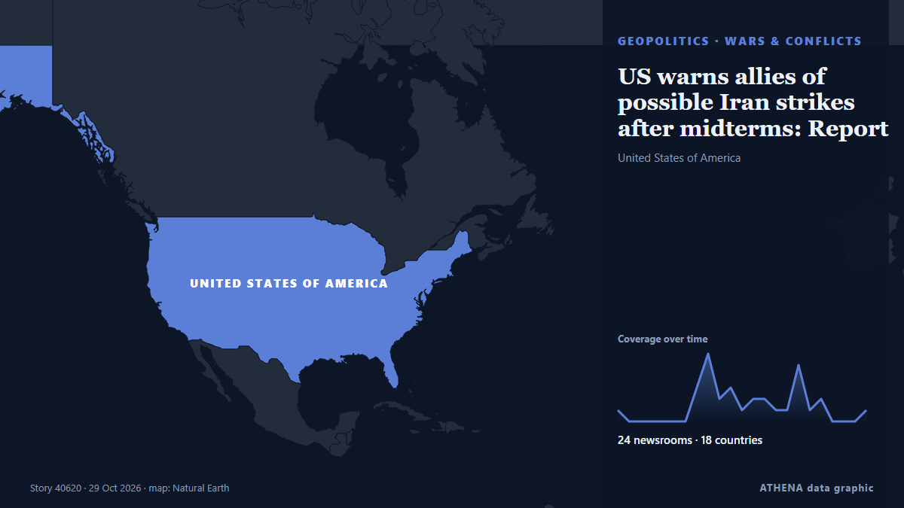

US warns allies of possible Iran strikes after midterms: Report

Tensions across the Middle East remain high, with the United States reportedly preparing for potentially major military operations against Iran following the US midterm elections, while fighting… from CGTN (World)
Reported independently by 24 outlets in 18 countries since 27 Oct, first by CGTN (World); coverage is fading. ATHENA rates the risk high (6.7/10), driven mainly by the severity of the harm described and its geographic and sector reach. Confidence is 92% (high), with 24 independent outlets corroborating it and an average source reliability of 76%. Who reported it: 3 newsrooms in United Arab Emirates, 2 newsrooms in China, 2 newsrooms in Turkey. The coverage ran from 27 Oct to 29 Oct, over 67 hours.
Why it matters: Security and diplomatic developments can shift alliances, trade and markets well beyond the countries directly involved.
What changed: 11 new reports from 11 newsrooms in the 24 hours to 29 Oct.
At a glance
Selected, scored and written by ATHENA's published methodology. No editor intervenes in individual events. How this is produced ›
| 27 Oct 03:41 UTC | 1 |
|---|---|
| 27 Oct 06:41 UTC | 0 |
| 27 Oct 09:41 UTC | 0 |
| 27 Oct 12:41 UTC | 0 |
| 27 Oct 15:41 UTC | 0 |
| 27 Oct 18:41 UTC | 0 |
| 27 Oct 21:41 UTC | 0 |
| 28 Oct 00:41 UTC | 3 |
| 28 Oct 03:41 UTC | 6 |
| 28 Oct 06:41 UTC | 2 |
| 28 Oct 09:41 UTC | 3 |
| 28 Oct 12:41 UTC | 1 |
| 28 Oct 15:41 UTC | 2 |
| 28 Oct 18:41 UTC | 2 |
| 28 Oct 21:41 UTC | 1 |
| 29 Oct 00:41 UTC | 1 |
| 29 Oct 03:41 UTC | 5 |
| 29 Oct 06:41 UTC | 1 |
| 29 Oct 09:41 UTC | 2 |
| 29 Oct 12:41 UTC | 0 |
| 29 Oct 15:41 UTC | 0 |
| 29 Oct 18:41 UTC | 0 |
| 29 Oct 21:41 UTC | 1 |
| 28 Oct 02:19 UTC | 4.6 |
|---|---|
| 28 Oct 02:41 UTC | 5.8 |
| 28 Oct 10:40 UTC | 6.2 |
| 28 Oct 11:07 UTC | 6.7 |
| 29 Oct 10:34 UTC | 6.8 |
| 29 Oct 23:39 UTC | 6.7 |
| 29 Oct 23:39 UTC | 6.7 |
Why these numbers
Importance
Risk
Confidence
The reporting — who reported it, and when
headline as published · opens the original- CGTN (World) · ChinaTensions persist amid possible US strikes, Saudi-Houthi clashes
- Anadolu Agency (English) · TurkeyUS warns Gulf states of possible 'short, intense' Iran war after midterms: Report
- The National · United Arab EmiratesMiddle East latest: US warns Gulf allies of possible renewal of Iran war, report says
- Gulf News · United Arab EmiratesUS-Israel-Iran war: What UAE residents need to know today (Oct. 28, 2026)
- APA (English) · AzerbaijanUS tells Gulf more strikes on Iran could be coming after midterms: WSJ
- Arab Times · KuwaitGulf on edge as US weighs massive Iran strikes after midterm elections
- TASS (English) · RussiaUS warns Gulf states of possible military action after November 3 — WSJ
- Khaama Press · AfghanistanUS Warns Gulf States to Prepare for Possible New Iran Strikes: WSJ
- Shafaq News (English) · IraqUS alerts Gulf states to possible Iran war
- NEWS.am (English) · ArmeniaUS may resume strikes on Iran after midterm elections, sources say
- Xinhua (English) — page reader · ChinaU.S. tells Gulf countries to prepare for possible strike on Iran after midterms: WSJ
- Express Tribune · PakistanUS warns Gulf states of possible 'short, intense' Iran war after midterms: report
- AzerNews · AzerbaijanUS warns Gulf states of possible strikes on Iran after November elections
- to vima · GreeceU.S. Warns Gulf of Possible Short, Intense Renewal of Iran War After Midterms
- Haaretz (English) · IsraelReport: U.S. prepares Gulf allies for short post-midterm conflict with Iran
- The New Arab · INTUS warns Gulf of 'intense' return to Iran war after midterms
- Middle East Eye · INTUS warns Gulf of intense strikes on Iran after midterms: Report
- Middle East Eye · INTUS warns Gulf of intense strikes on Iran after midterms: Report
- Cyprus Mail · CyprusUS warns Gulf states of possible new strike on Iran after midterms
- Middle East Eye · INTVance reaches out to Iranian security chief to restart peace talks, reports say
- The Canadian Press (via CityNews) · CanadaUS warns allies to prepare for possible Iran strikes, retaliation after elections, AP sources say
- Indian Express · IndiaTrump warns Gulf states to prepare for ‘possible short, intense renewal of Iran war’ after US midterms: Report
- Gulf News · United Arab EmiratesMiddle East war: Iran says progress hinges on 7 conditions as Hormuz tankers burn, Riyadh targeted by Houthi missiles
- Arab Times · KuwaitUS Warns Gulf Allies to Brace for Iran Strikes and Retaliation After Midterm Elections
- Korea Herald · South KoreaUS warns allies to prepare for possible Iran strikes
- NEWS.am (English) · ArmeniaPossible US strikes on Iran in November could last several days, media report
- RTÉ News · IrelandUS warns allies of potential Iran strikes after midterms
- Türkiye Today · TurkeyUS warns allies of possible Iran strikes after midterms: Report
- Haaretz (English) · IsraelU.S. urges Mideast allies to prepare for possible new Iran strikes after midterms, sources say
- The New Arab · INTUS warns allies on possible Iran strikes after elections
- Fortune · United States‘Whenever I want it to end’: U.S. tells Middle East allies to prepare for possible new strikes on Iran after the midterms